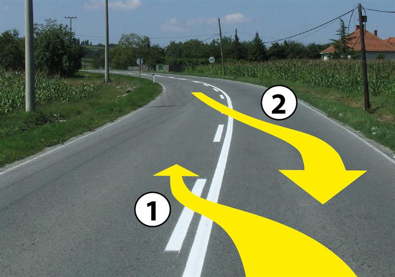
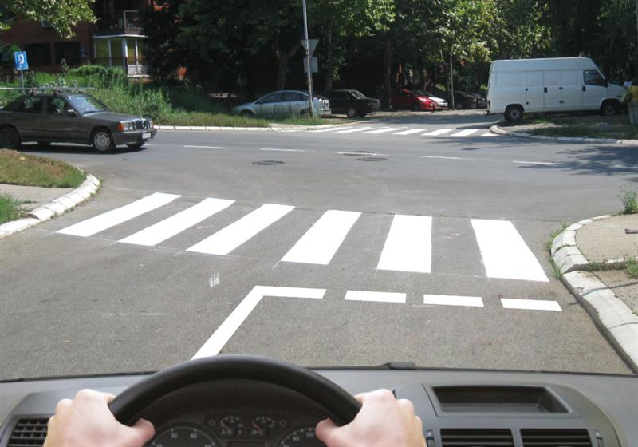

Линии, стрелки, стоп-линия и реверсивные полосы.
Виды и цвета
Oznake na kolovozu i trotoaru — разметка на проезжей части и тротуаре: линии, стрелки, надписи и другие обозначения. Она предупреждает, направляет поток, задаёт ограничения и обязанности. Uzdužne oznake — продольная; poprečne oznake — поперечная; ostale oznake — прочая. 7 · фр. 26–29.
По общему правилу цвет белый. Жёлтый лектор показывает для специальных мест: полос общественного транспорта, остановок, такси, запрета остановки/стоянки и временной схемы при дорожных работах. Žuta traka — разговорное название полосы общественного транспорта, не требование закрасить всю полосу. В банке B жёлтый используется также для полосы электронной оплаты проезда (10998). Поэтому мнемоника лектора «белое нам можно, жёлтое нам нельзя» слишком широка: белая сплошная тоже запрещает пересечение, а у жёлтой разметки нужно прочитать назначение. 7 · фр. 28, 34–36.
Пример лектора для конкретной белградской полосы: действует 07:00–09:00 и 14:00–16:00, в другое время режим иной по табличке. Эти часы не относятся ко всем полосам общественного транспорта. Жёлтая линия при работах названа шириной 10 см — пример исполнения, не универсальный размер. 7 · фр. 28.
Продольные линии
| Сербский термин |
Что распознавать |
| Ivična linija |
Край проезжей части |
| Razdelna linija |
Разделяет направления или полосы |
| Isprekidana |
Прерывистая |
| Neisprekidana / puna |
Сплошная: запрещены пересечение и движение по ней |
| Udvojena neisprekidana |
Двойная сплошная |
| Razdelna kombinovana |
Сплошная рядом с прерывистой: учитывай ближнюю к своей стороне линию |
| Razdelna linija upozorenja |
Предупреждение о приближении сплошной |
| Linija vodilja |
Короткая прерывистая направляющая через перекрёсток |
Комбинированную линию в показанной ситуации можно пересечь со стороны прерывистой; со стороны сплошной — нельзя. Банк 11004 уточняет именно положение линий относительно стороны движения, а не просто наличие пунктиров где-нибудь в паре. 7 · фр. 29–31.
Линия предупреждения отличается удлинёнными штрихами и короткими промежутками. Лектор сравнивает 2 м штрих / 2 м промежуток с 3 м / 1 м. Это его наглядный пример; банк 11040 проверяет назначение линии, не устанавливает этими числами универсальные размеры всей разметки. 7 · фр. 31.
Udvojene isprekidane linije с обеих сторон полосы обозначают переменное направление — saobraćajna traka sa izmenljivim smerom kretanja. В банке 9262 два признака: направление меняется, движение регулируют светофоры над полосой. Лектор описывает жёлтую мигающую стрелку, требующую уйти на указанную соседнюю полосу; красный крест запрещает движение по полосе. Приведённое расписание одной улицы 08:00–17:00 / 17:00–08:00 — местный пример, не режим всех реверсивных полос. 7 · фр. 29–30.
Стоп-линии, переходы и стрелки
Лектор объясняет поперечную сплошную как остановку, прерывистую — как уступание с остановкой при необходимости. Важное уточнение банка B 11042: сплошная стоп-линия перед светофором указывает место остановки, когда сигнал запрещает проезд. Она не требует останавливаться каждый раз на разрешающий сигнал. Нельзя заучивать «любая стоп-линия полностью заменяет STOP» без контекста регулирования. 7 · фр. 29–32.
Pešački prelaz — переход; prelaz biciklističke staze preko kolovoza — пересечение дороги велодорожкой. На показанном совмещённом переходе лектор различает велосипедную часть, где велосипедист едет, и обычную зебру, где ведёт велосипед. Размеченный STOP или треугольник на асфальте дополнительно предупреждает об обязанности; в снегу разметка может быть не видна. Это повод внимательно смотреть знаки, а не автоматически объявлять свой подъезд главным. 7 · фр. 32–33.
Стрелки между прерывистыми линиями заранее сообщают назначение полос: перестроиться нужно заблаговременно и безопасно. У перекрёстка при сплошных границах стрелки задают разрешённые направления; нельзя исправлять выбранный ряд пересечением сплошной. Kosnik в показанном примере обозначает конец одной полосы; polja za usmeravanje saobraćaja — направляющие заштрихованные участки, не дополнительная полоса движения или парковка. 7 · фр. 27, 33–34.
Чего не заучивать как проверенное правило
Штрафы за сплошную и полосу общественного транспорта в лекции приведены без полного состава нарушения: 20–40 тыс. динаров, 6 баллов, минимум 3 месяца; для жёлтой полосы — 40–60 тыс., 9 баллов, полгода, рядом есть плохо распознанные старые санкции. Они сохранены как слова лектора, не как актуальная таблица наказаний. 7 · фр. 15, 31, 35.
В рассказе о парковке для инвалидов названы ежегодная наклейка и «не менее двух мест на парковку». Применимость зависит от местных правил и условий разрешения; из этого текста нельзя вывести универсальное право любого водителя пользоваться таким местом в машине с наклейкой. Слайды не сохранены, а сразу после этого места в источнике отмечен пропуск. 7 · фр. 36–38.
Проверь себя
Вопросы банка B по теме. Сначала реши сам, затем открой перевод или разбор.
B · 11004
2 балл(а) · правильных ответов: 1
Razdelna kombinovana linija označava:
- zabranu prelaska preko te linije, odnosno kretanјa po liniji, za vozila koja se kreću kolovoznom trakom u kojoj je isprekidana linija bliža desnoj ivici kolovoza od neisprekidane
- zabranu prelaska preko te linije za sva vozila iz obe kolovozne trake
- zabranu prelaska preko te linije, odnosno kretanјa po liniji, za vozila koja se kreću kolovoznom trakom u kojoj je neisprekidana linija bliža desnoj ivici kolovoza od isprekidane
Перевод вопроса
Для кого комбинированная разделительная линия запрещает пересечение и движение по ней?
Ответ и ловушка
Правильный ответ: 3.
По-русски: Для водителей со стороны, где сплошная ближе к правому краю их проезжей части, чем прерывистая.
У комбинированной линии важна своя сторона
Ловушка: Смотреть на ближнюю к своей стороне линию. Наличие второй прерывистой не разрешает пересечь со стороны сплошной.
Слова в вопросе: neisprekidana linija bliža desnoj ivici.
B · 11005
2 балл(а) · правильных ответов: 1
Razdelna kombinovana linija, prikazana na slici, daje mogućnost prelaska preko linije:

- bilo kojom putanјom
- putanјom označenom brojem 2
- putanјom označenom brojem 1
Перевод вопроса
По какой из показанных траекторий разрешено пересечь комбинированную линию?
Ответ и ловушка
Правильный ответ: 2.
По-русски: По траектории, обозначенной на рисунке числом 2.
Траектория со стороны прерывистой
Ловушка: Цифра 2 на рисунке — обозначение траектории. Она начинается со стороны прерывистой; траектория 1 пересекает со стороны сплошной.
Слова в вопросе: putanja; razdelna kombinovana linija.
B · 11023
2 балл(а) · правильных ответов: 1
U situaciji prikazanoj na slici:

- isprekidana linija zaustavlјanјa Vas obavezuje da se morate uvek zaustaviti ispred te linije bez obzira na saobraćajnu situaciju
- zaustavićete se na liniji zaustavlјanјa radi ustupanјa prvenstva prolaza vozilima, ako za to postoji potreba
- se ne morate zaustaviti jer vozilo dolazi sa Vaše leve strane
Перевод вопроса
Как поступить перед показанной прерывистой линией остановки?
Ответ и ловушка
Правильный ответ: 2.
По-русски: Остановиться для уступания при наличии необходимости.
Уступить не всегда означает обязательно остановиться
Ловушка: Это не безусловный STOP. Но отсутствие обязанности всегда останавливаться не отменяет приоритет машины на пересекаемой дороге.
Слова в вопросе: ako za to postoji potreba; ustupanje prvenstva.
B · 11040
2 балл(а) · правильных ответов: 1
Uzdužna linija koja se koristi za najavlјivanјe blizine neisprekidane linije je:
- ivična linija
- razdelna obična isprekidana linija
- razdelna linija upozorenјa
Перевод вопроса
Какая продольная линия предупреждает о приближении сплошной?
Ответ и ловушка
Правильный ответ: 3.
По-русски: Разделительная линия предупреждения.
Предупреждение о сплошной — отдельная линия
Ловушка: Обычная прерывистая и краевая имеют иное назначение. Не подменять название запомненной длиной штриха.
Слова в вопросе: razdelna linija upozorenja.
B · 9262
2 балл(а) · правильных ответов: 2
Saobraćajna traka označena sa razdelnim udvojenim isprekidanim linijama označava:
- da se na nјoj odvija saobraćaj sa izmenlјivim smerom kretanјa
- da je ona namenјena samo za preticanјe vozila
- da je na nјoj saobraćaj regulisan semaforima, postavlјenim iznad saobraćajne trake
- da je na nјoj saobraćaj regulisan pravilima saobraćaja
Перевод вопроса
Что обозначает полоса с двойными прерывистыми разделительными линиями?
Ответ и ловушка
Правильные ответы: 1, 3.
По-русски: Переменное направление движения и регулирование светофорами над полосой.
Реверсивная полоса: нужны оба признака
Ловушка: Выбрать оба признака. Это не специально выделенная полоса для обгона.
Слова в вопросе: izmenljiv smer kretanja; semafori postavljeni iznad.
B · 11042
2 балл(а) · правильных ответов: 1
Neisprekidana linija zaustavlјanјa, obeležena ispred svetlosnog saobraćajnog znaka, označava:
- mesto na kolovozu ispred koga vozač mora da zaustavi vozilo samo kada je postavlјen i saobraćajni znak „Obavezno zaustavlјanјe“
- mesto na kolovozu ispred koga vozač mora da zaustavi vozilo
- mesto na kolovozu ispred koga vozač mora da zaustavi vozilo samo ako mu je svetlosnim saobraćajnim znakom zabranјen prolaz
Перевод вопроса
Когда сплошная стоп-линия перед светофором требует остановиться перед ней?
Ответ и ловушка
Правильный ответ: 3.
По-русски: Только если светофор запрещает проезд.
Стоп-линия перед светофором не требует остановки на зелёный
Ловушка: Место остановки и самостоятельный безусловный запрет — разные вещи. Лекторское «линия заменяет STOP» нельзя применять без контекста.
Слова в вопросе: ispred svetlosnog saobraćajnog znaka; samo ako; zabranjen prolaz.